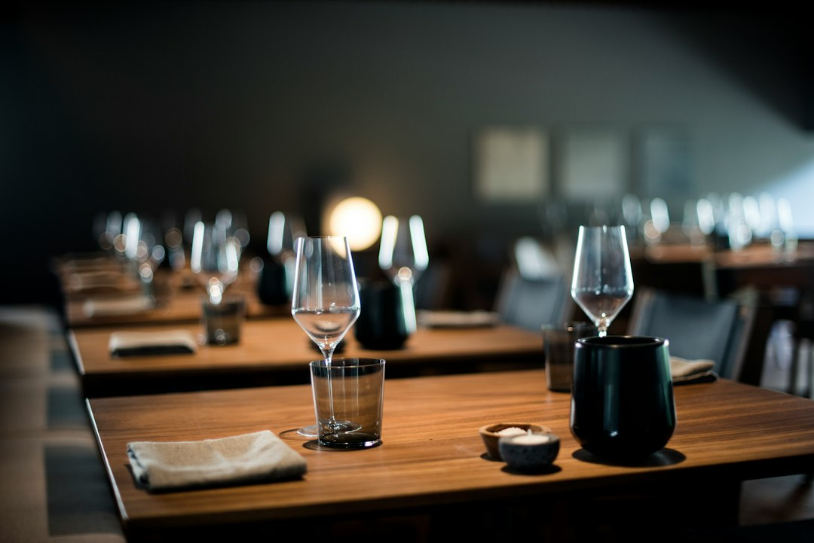

Clara M.Reserved for the 7:30 set • Chef’s tasting
“The room is tuned like an instrument. You can hear the brushwork, and the service never interrupts it. Courses arrived exactly between tunes—felt composed.”
The Midnight Note is a charcoal-dark listening room where brass glows, plates arrive on cue, and every set is paced like a tasting menu. Reserve a table for tonight’s program—or apply for membership to unlock late-night access and cellar selections.

A slow-rotating brass ring echoes cymbal shimmer—our signature motif for sound in motion.
Three entrances to the same night: the music, the menu, and the room itself. Tap a pillar to expand the experience.
Four pillars of sound, each with its own cadence. Filter by vibe to shape your night.
Choose your tempo: a full supper club sequence or a private lounge ritual with curated bottle service.


A few details—so your night moves without friction.
Yes. Conversation is welcomed between sets; during performances we keep service quiet and ask guests to keep voices low. Think: supper club energy with concert-level attention.
Plan for two sets plus intermission—about 2 hours. Chef’s tasting runs with the first set and finishes during the encore. Lounge bookings are typically 2.5 hours.
We do. The “Brass & Citrus” pairing focuses on botanicals, tea infusions, and carbonation—built to complement the menu without overwhelming the room.
Praise that reads like a set list: tight, warm, and specific. Scroll for more.
“The room is tuned like an instrument. You can hear the brushwork, and the service never interrupts it. Courses arrived exactly between tunes—felt composed.”
“The lounge has that sapphire glow—quiet luxury without the stiffness. Our server built a flight around the band’s tempo. Every pour felt intentional.”
“It’s the softest kind of drama: neon, candlelight, corners, and a band that plays like it knows your name. The room breathes.”
Numbers that tell a story—sets played, cocktails built, and the artists who have crossed our stage.
Browse nights that shaped the room. Hover or tap an entry to reveal a photographic memory with subtle parallax.
Notes from the room: how we build the menu, tune the system, and program the night.
On pacing a night like a record: side A for clarity, side B for heat, and an encore that feels like a secret track.
Timing is a flavor. We design each course so the last bite resolves before the next downbeat. It’s hospitality with a metronome.
A listening room should feel intimate without becoming dry. Here’s how we shaped the ceiling and walls to keep cymbals airy and vocals present.
For guests who return often: priority reservations, members-only late sets, and cellar access for special nights.
Builds menus like arrangements—contrast, repetition, surprise. Member nights include off-menu courses and paired flights designed for specific lineups.
Curates the room’s atmosphere: the glow of the bar, the pacing of the night, and the sound-wave motifs that thread through every season’s program.
Choose your seating, your set, and whether you’d like the chef’s sequence.
Requests are confirmed by email.
